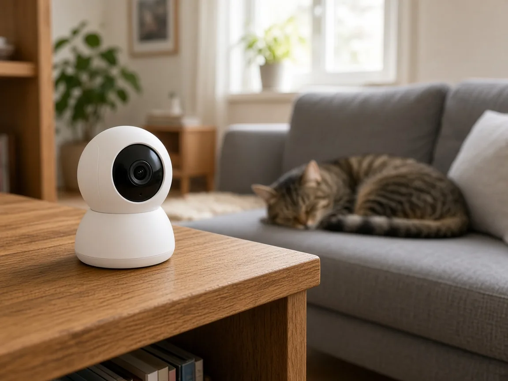

Caméra de surveillance pour chat d’appartement : comment choisir en 2026

Voir son chat dans la journée, vérifier qu’il a mangé, qu’il n’est pas resté coincé dans un placard ou qu’il ne s’attaque pas aux rideaux : une caméra intérieure rassure beaucoup de propriétaires. Les modèles « spécial animaux » existent, mais une bonne caméra domestique suffit souvent. Voici comment choisir sans payer pour des fonctions inutiles.
Les critères qui comptent
- Champ de vision : un chat bouge partout. Une caméra motorisée (rotation horizontale et verticale, souvent appelée « pan/tilt ») couvre une pièce entière depuis un seul point ; une caméra fixe grand angle convient à un studio.
- Vision nocturne : indispensable si tu regardes le soir ou si la pièce est sombre en hiver.
- Stockage : carte microSD (local, sans abonnement) ou cloud (souvent payant). Pour un simple coup d’œil en direct, aucun stockage n’est nécessaire.
- Audio bidirectionnel : parler au chat amuse surtout le propriétaire ; certains chats s’en inquiètent. Teste-le en ta présence.
- Détection : la détection de mouvement ou d’animal envoie des alertes. Dans un appartement avec un chat actif, règle la sensibilité, sinon ton téléphone vibrera toute la journée.
- Wi-Fi : beaucoup de caméras ne fonctionnent qu’en 2,4 GHz. Vérifie la portée dans la pièce visée.
Trois familles de caméras
1. Caméra intérieure motorisée « généraliste »
C’est le meilleur rapport utilité/prix : des marques comme TP-Link (gamme Tapo), Xiaomi ou Eufy proposent des caméras pan/tilt avec vision nocturne et emplacement microSD. Tu pilotes l’orientation depuis l’application pour suivre le chat d’une pièce à l’autre.
Pour qui : la plupart des appartements, budget maîtrisé, pas d’abonnement voulu.
Voir sur Amazon : caméras motorisées2. Caméra pour animaux avec lanceur de friandises
Furbo, Petcube et d’autres proposent des caméras qui lancent une friandise à distance. Ludique, et utile pour associer la caméra à quelque chose de positif. Attention : certaines fonctions avancées (alertes intelligentes, historique vidéo) passent par un abonnement. Lis la fiche produit avant d’acheter.
Pour qui : chat gourmand, propriétaire qui veut interagir et pas seulement regarder. Comparatif détaillé : caméra chat avec lanceur de friandises (Furbo, Petcube).
Voir sur Amazon : caméras à friandises3. Distributeur de croquettes avec caméra
Un seul appareil pour nourrir et voir : la caméra est placée au-dessus du bol, donc tu vois surtout le chat… quand il mange. Bon choix si tu voulais de toute façon un distributeur. Détails dans notre guide des distributeurs connectés.
Voir sur Amazon : distributeurs avec caméraOù placer la caméra ?
- En hauteur (étagère, haut d’un meuble), hors de portée des pattes : un chat curieux fait tomber les caméras posées au bord.
- Orientée vers les zones de vie : arbre à chat, gamelles, fenêtre préférée. Évite de filmer la litière en continu, peu utile.
- Loin d’un contre-jour (fenêtre en face de l’objectif) qui rend l’image illisible en journée.
- Câble d’alimentation protégé ou caché : certains chats mâchonnent les fils.
Vie privée : les bons réflexes
Une caméra intérieure filme aussi les humains. Si d’autres personnes viennent chez toi (colocataire, aide-ménagère, pet-sitter), préviens-les : filmer quelqu’un à son insu chez toi peut poser un problème juridique. Côté sécurité, change le mot de passe par défaut, active la double authentification du compte quand elle existe et fais les mises à jour. Le mode « confidentialité » (objectif masqué quand tu es à la maison) est un vrai plus.
Notre avis
Pour la majorité des chats d’appartement, une caméra intérieure motorisée avec microSD suffit : pas d’abonnement, une pièce entière couverte. La caméra à friandises vaut le coup si tu veux jouer à distance. Pour un équipement complet, vois notre kit débutant chat connecté.
Liens affiliés Amazon : une commission peut être versée, sans surcoût pour toi.